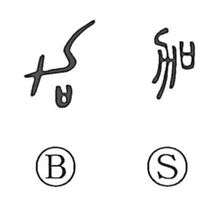

加

Kun: kuwaeru, kuwawaru | On: ka
to add ・ to attach ・ to increase
Explanation
加 joins 力, a plough, with 口, the vessel holding written prayers. The vessel is brought beside the implement in a rite of purification before cultivation begins.
Unpurified tools were thought to bring insect damage to the autumn crop. Prayers and purification were therefore added to the plough so that it could be used safely and the harvest would increase. This is both adding a rite to the implement and seeking an addition to its productive result.
From that action come adding, attaching, augmenting, and giving something further. 加 can also mean surpassing an existing amount or, adverbially, still more. Related 嘉 adds the sound of a drum and joins the agricultural setting to celebration and auspicious offerings.